Retheme study: when the pictures change the cast
Canvas only. The art study kept the European court and asked which pictures fit it. This one goes the other way: pick a tradition, let it rename the sixteen cards, and see what the frame, the sentence and the chrome become. Rules never change; only names, art and dressing. All sources public domain.
Retheme A
Edo: a letter to the shōgun's daughter
- Palette Indigo, vermilion, bone paper. Gold leaves; the seal-red cartouche carries the rank.
- Frame Thin single rule, two vermilion bands, square window. Name in wide tracked capitals.
- Sentence "Play the Ashigaru on Bot Beatrix, guessing Monk."
- Chrome Accent shifts from vermilion-orange to seal red; the page stays bone. Alegreya still works; a brush-script display face would be the tempting mistake.
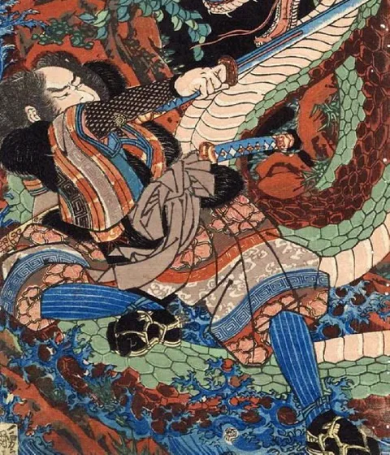
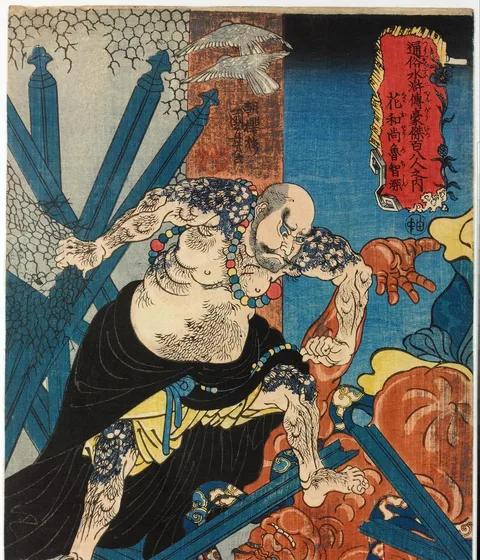
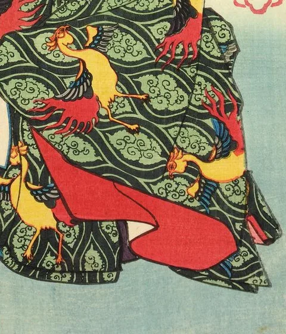
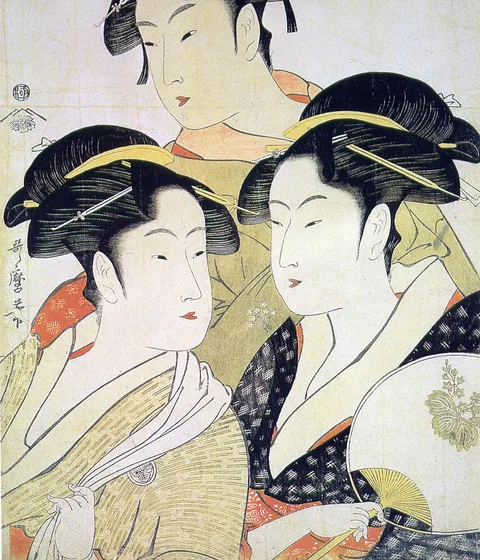
| Was | Becomes | Why it still works | |
|---|---|---|---|
| 1 | Guard ×5 | Ashigaru | Foot soldier. Names a suspect and strikes; plenty of them. |
| 2 | Priest ×2 | Monk | Hears confessions, sees a hand. |
| 3 | Baron ×2 | Samurai | A duel of rank; the lower hand is out. |
| 4 | Handmaid ×2 | Lady-in-waiting | The ōoku's screen; untouchable until next turn. |
| 5 | Prince ×2 | Daimyō | Orders a discard, even his own. |
| 6 | King ×1 | Shōgun | Swaps hands by decree. |
| 7 | Countess ×1 | Tayū | The highest courtesan; must step aside when a lord is present. |
| 8 | Princess ×1 | Hime | The shōgun's daughter. Discard her and you are out. |
Retheme B
Isfahan: a letter to the shah's daughter
- Palette Lapis, gold, rose madder. Closest to the current card palette; the chrome could stay as is.
- Frame Illuminated gold-and-lapis rule, window with a lobed bottom edge like a manuscript frontispiece.
- Sentence "Play the Pahlavan on Bot Beatrix, guessing Dervish."
- At 56px The weak point. Miniatures are crowded scenes with small figures; crops must isolate one person and still lose detail.
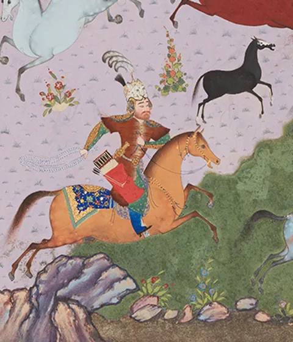
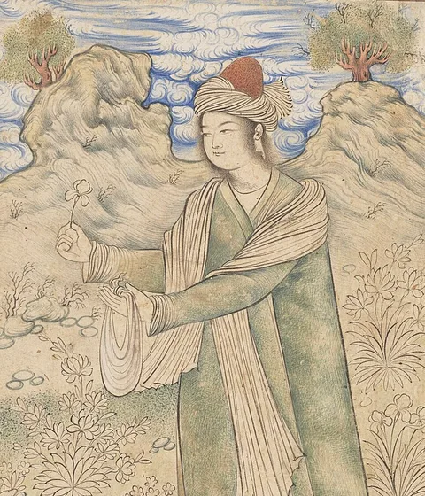
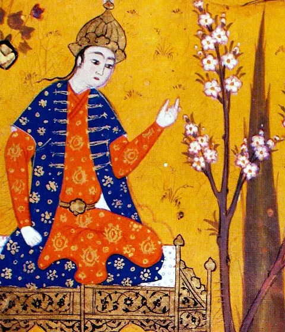
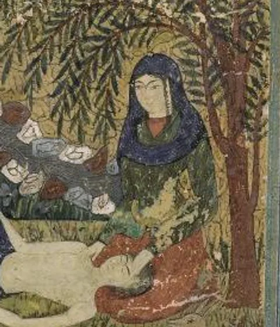
| Was | Becomes | Why it still works | |
|---|---|---|---|
| 1 | Guard ×5 | Pahlavan | Champion-at-arms; names and strikes. |
| 2 | Priest ×2 | Dervish | Sees what is hidden. |
| 3 | Baron ×2 | Khan | Compares standing; the lesser leaves court. |
| 4 | Handmaid ×2 | Nadimeh | Companion to the princess; shields her. |
| 5 | Prince ×2 | Shahzadeh | Orders a hand discarded. |
| 6 | King ×1 | Shah | Trades hands by decree. |
| 7 | Countess ×1 | Vizier's wife | Must withdraw when royalty is in hand. |
| 8 | Princess ×1 | Shirin | The beloved of the poem. Lose her and the round is over. |
Retheme C
Paris 1895: a letter to the diva
- Palette Black, poster yellow, one red. Nothing of the current palette survives.
- Frame Heavy black rule, square window, sans-serif capitals. The card looks like a ticket.
- Sentence "Play the Gendarme on Bot Beatrix, guessing Critic."
- Chrome Pulls the whole interface with it: Alegreya would go, a grotesque would come in, the page would turn cream and black. A different product.
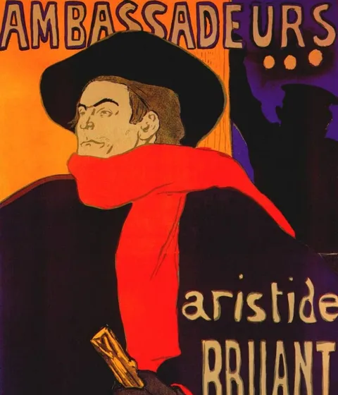
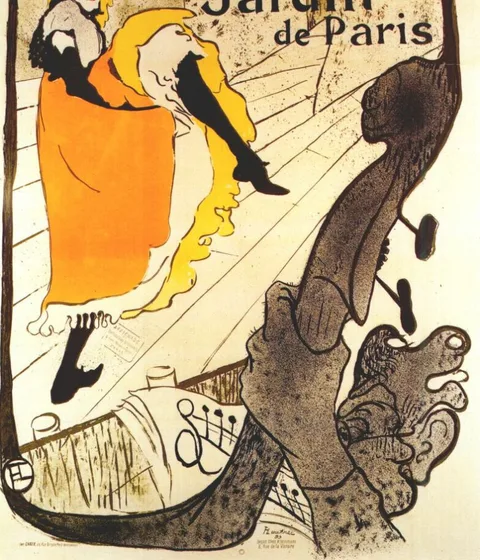
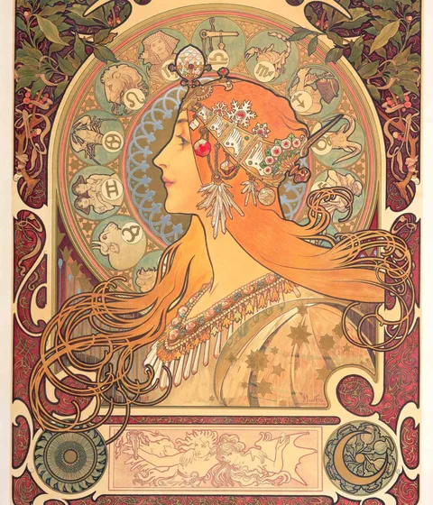
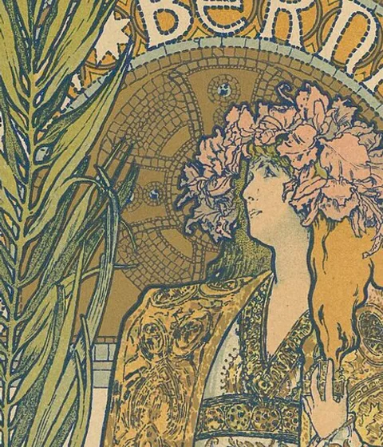
| Was | Becomes | Why it still works | |
|---|---|---|---|
| 1 | Guard ×5 | Gendarme | Accuses by name. |
| 2 | Priest ×2 | Critic | Sees everything, says nothing useful. |
| 3 | Baron ×2 | Patron | Compares purses; the poorer is shown out. |
| 4 | Handmaid ×2 | Dresser | Nobody gets past the dressing-room door. |
| 5 | Prince ×2 | Leading man | Makes someone drop their part. |
| 6 | King ×1 | Impresario | Recasts: swaps hands. |
| 7 | Countess ×1 | Grande dame | Must be played when a leading man or the impresario is in hand. |
| 8 | Princess ×1 | La Diva | Sarah Bernhardt. Drop her and the show closes. |
Retheme D
Tenochtitlan: a letter to the tlatoani's daughter
- Palette Ochre, turquoise, black outline on cream. A fresh palette that still sits on a warm neutral page.
- Frame Square corners, stepped two-colour bands, thin turquoise inner rule. No gold.
- Sentence "Play the Eagle Warrior on Bot Beatrix, guessing Priest."
- At 56px Excellent. The figures are already icons.
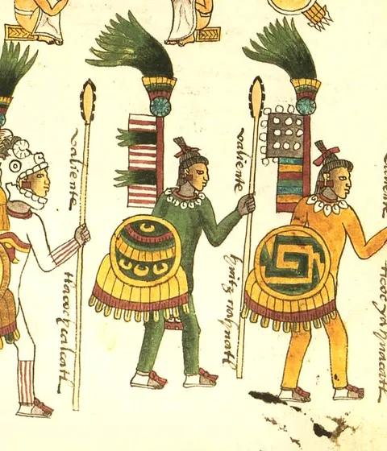
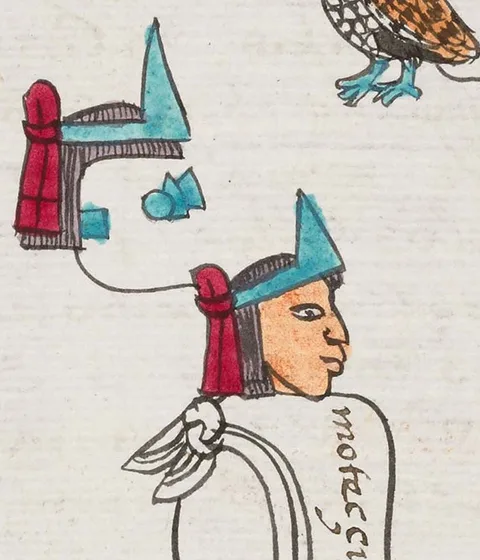
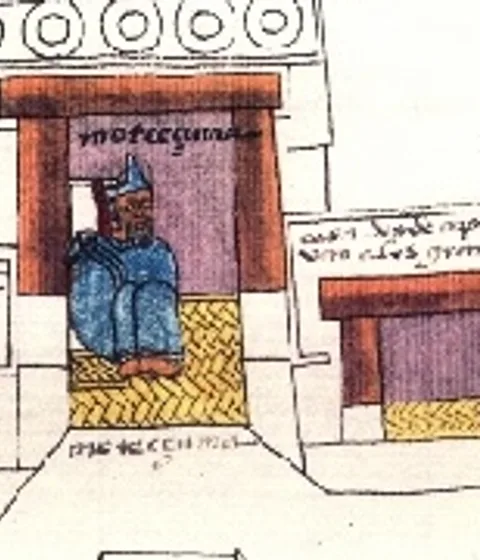
| Was | Becomes | Why it still works | |
|---|---|---|---|
| 1 | Guard ×5 | Eagle Warrior | Names a captive. |
| 2 | Priest ×2 | Priest | Reads the signs: looks at a hand. |
| 3 | Baron ×2 | Jaguar Knight | Trial of rank. |
| 4 | Handmaid ×2 | Weaver | Behind the loom, out of reach. |
| 5 | Prince ×2 | Noble (pilli) | Demands a discard. |
| 6 | King ×1 | Tlatoani | The speaker; swaps hands. |
| 7 | Countess ×1 | Cihuacoatl | Second to the ruler; must act when a noble or the tlatoani is present. |
| 8 | Princess ×1 | Princess | No surviving portrait; would need to be drawn in the codex manner. |
What the exercise shows
A retheme is cheap in the engine (one name table, already isolated in cards.ts) and expensive everywhere else: art sourcing, the frame, the help text that curl prints, the README, and in two of four cases the chrome. If we ever ship one, it should be a theme pack: a JSON of names and effects text, a folder of eight images, and a small CSS block for the frame. The gallery-wall chrome stays constant, which is the whole point of having separated it.
Ranking by how much we'd have to touch: Isfahan (chrome unchanged, art hard), Edo (accent shifts, art easy, best cast), Tenochtitlan (accent shifts, art thin), Paris (everything changes).